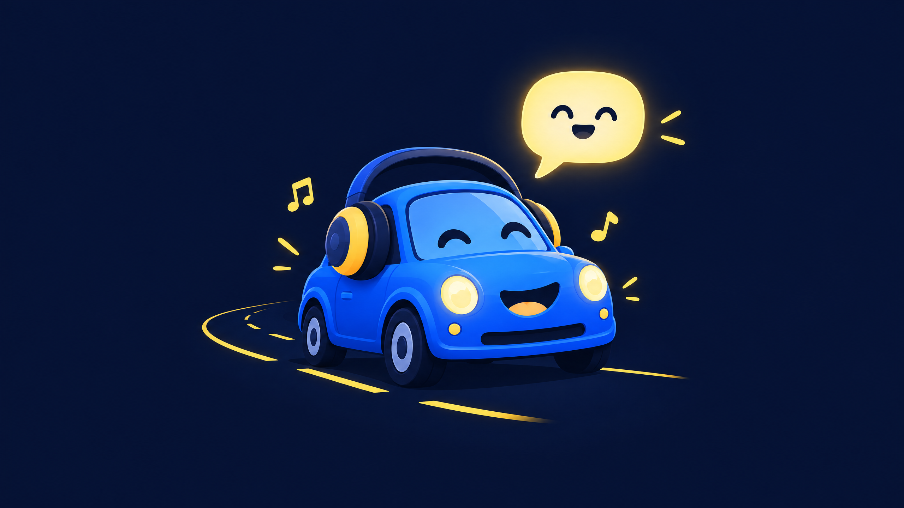
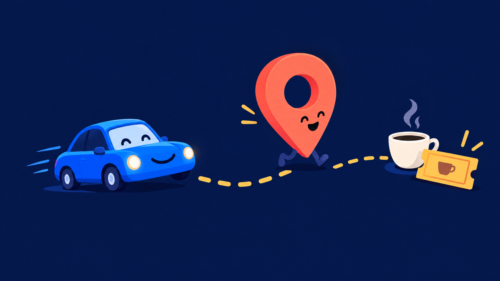

01 / Converse
Talk first. Tap last.
Use conversational assistance designed around short in-car moments instead of a crowded dashboard.
View voice featuresAndroid Auto · A calmer drive
MuseAI brings conversational help, places, reservations, and voice controls into a focused Android Auto experience built for the moments when your attention belongs forward.
Explore the system Read the setup path
The point of the interface
Driving interfaces should not feel like tiny desktop software. MuseAI keeps the story focused: say what you need, find the next useful place, and keep the journey moving.
See the rhythm
The current scaffold is intentionally focused on the moments that benefit most from voice and glanceable structure.
01 / Converse
Use conversational assistance designed around short in-car moments instead of a crowded dashboard.
View voice features02 / Discover
Search destinations and useful places with a visual language that keeps the road in the foreground.
Explore places
03 / Continue
Reservations and trip details belong in a streamlined flow, not scattered across unrelated screens.
See the build pathUseful intelligence should feel like a co-pilot, not another thing to manage.
The useful layer
No feature confetti. Just a small, legible set of capabilities that can make a drive feel lighter.
01 / Chat
Voice interactions shaped for quick, safe moments while moving.
02 / Places
Find useful places and the next stop without leaving the journey.
03 / Voice
Speech recognition and synthesis touchpoints for a hands-free flow.
From idea to drive
The native Android project is not included in this checkout yet. The website makes the intended product language and integration path concrete.
Define the voice, place, reservation, and interruption flows around Android Auto’s distraction-optimized patterns.
Connect authenticated chat, place, reservation, speech, and synthesis endpoints with secure runtime configuration.
Use Android Auto Desktop Head Unit or a compatible vehicle to validate navigation, audio, failure, and confirmation states.
“The best in-car assistant is the one that gets out of the way after the useful thing is done.”